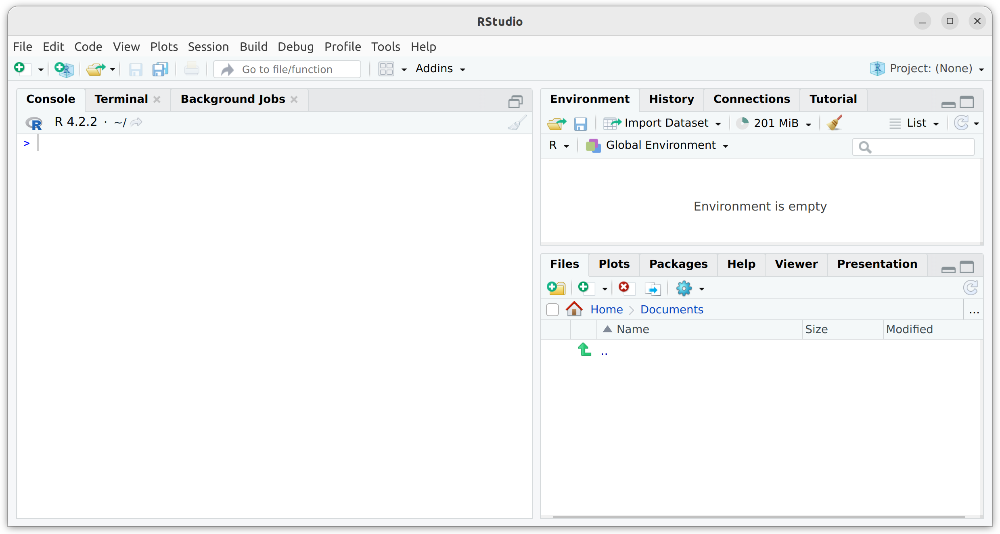
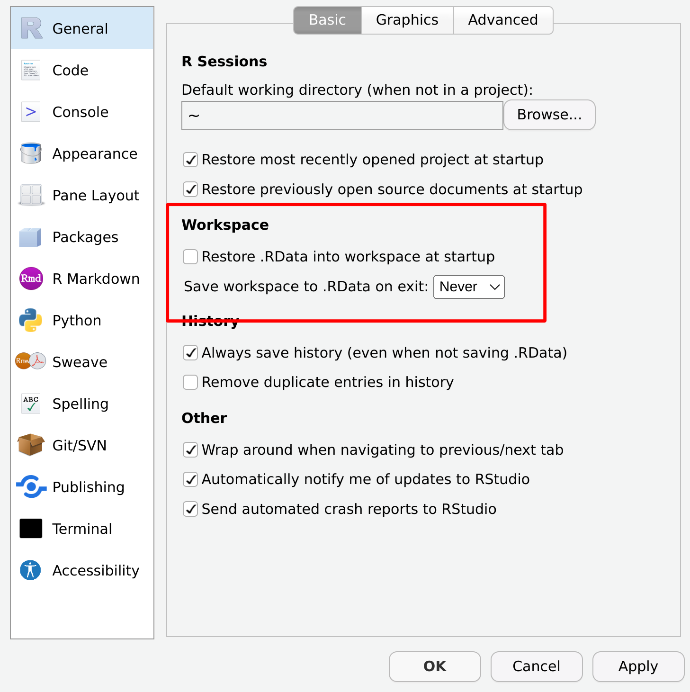

2 Installing R
Important
You are, I’m sorry to inform you, reading the work-in-progress revision of “Learning Statistics with R”. This chapter is currently a mess, and I don’t recommend reading it.
Let’s get started. Just as with any piece of software, R needs to be installed on a “computer”, which is a magical box that does cool things and delivers free ponies. Or something along those lines: I may be confusing computers with the ipad marketing campaigns. Anyway, R is freely distributed online, and you can download it here:
At the top of the page – under the heading “Download and Install R” – you’ll see separate links for Windows users, Mac users, and Linux users. If you follow the relevant link, you’ll see that the online instructions are pretty self-explanatory, but I’ll walk you through the installation anyway. As of this writing, the current version of R is 4.2.2 but they usually issue updates every six months, so you’ll probably have a newer version.
2.1 Windows installation
The CRAN homepage changes from time to time, and it’s not particularly pretty. But it’s not difficult to find what you’re after. Assuming it doesn’t change, it’s a three-step process:
- You’ll find a link at the top of the page with the text “Download R for Windows”. Click on that.
- This will take you to a page that offers you a few options. At the very top of the page you’ll see a link for folks installing R for the first time. Click on that.
- This will take you to a page that has a prominent link at the top called “Download R 4.2.2 for Windows”. Click on that and your browser should start downloading a file called
R-4.2.2-win.exe.
The file may take some time depending on how fast your internet connection is. Once you’ve downloaded the file, double click to install it. As with any software you download online, Windows will ask you some questions about whether you trust the file and so on. After you click through those, it’ll ask you where you want to install it, and what components you want to install. The default values should be fine for most people, so again, just click through. Once all that is done, you should have R installed on your system. You can access it from the Start menu, or from the desktop if you asked it to add a shortcut there. You can now open up R in the usual way if you want to, but what I’m going to suggest is that instead of doing that you should now install RStudio (Section 2.4).
2.2 Mac OS installation
When you click on the Mac OS link, you should find yourself on a page with the title “R for Mac OS”. Here you’ll see several different options. The exact option that you want depends on what kind of Mac you have, and what version of the operating system you’re running. Most likely, however, what you’ll want is one of the first two options:
- If you’re using an M1 Mac or higher, select the
R-4.2.2-arm64.pkgoption - If you’re using an Intel Mac, select the
R-4.2.2.pkgoption.
Either way, your browser will start downloading the package file. Once it’s completed, all you need to do is open it by double clicking on the package file. The installation should go smoothly from there: just follow all the instructions just like you usually do when you install something.
Once it’s finished, you’ll find a file called R.app in the Applications folder. You can now open up R in the usual way if you want to, but what I’m going to suggest is that instead of doing that you should now install RStudio (Section 2.4).
2.3 Linux installation
If you’re successfully managing to run a Linux box, regardless of what distribution, then you should find the instructions on the website easy enough. You can compile R from source yourself if you want, or install it through your package management system, which will probably have R in it. Alternatively, the CRAN site has precompiled binaries for Debian, Red Hat, Suse and Ubuntu and has separate instructions for each. Once you’ve got R installed, you can run it from the command line just by typing R. However, if you’re feeling envious of Windows and Mac users for their fancy GUIs, you can download RStudio too (Section 2.4).
2.4 Installing RStudio
Okay, so regardless of what operating system you’re using, the last thing that I told you to do is to download RStudio. To understand why I’ve suggested this, you need to understand a little bit more about R itself. The term R doesn’t really refer to a specific application on your computer. Rather, it refers to the underlying statistical language. You can use this language through lots of different applications. When you install R initially, it comes with one application that lets you do this: it’s the R.exe application on a Windows machine, and the R.app application on a Mac. But that’s not the only way to do it. There are lots of different applications that you can use that will let you interact with R. One of those is called RStudio, and it’s the one I’m going to suggest that you use. RStudio provides a clean, professional interface to R that I find much nicer to work with than either the Windows or Mac defaults. Like R itself, RStudio is free software: you can find all the details on their webpage. In the meantime, you can download it here:
https://posit.co/download/rstudio-desktop/
This link should take you to a page with several possible downloads: there’s a different one for each operating system. Click on the appropriate link, and the RStudio installer file will start downloading. Once it’s finished downloading, open the installer file in the usual way to install RStudio. After it’s finished installing, you can start R by opening RStudio. You don’t need to open R.app or R.exe in order to access R. RStudio will take care of that for you. To illustrate what RStudio looks like, the figure below shows a screenshot of an R session in progress. In this screenshot it happens to be running on linux, but it looks almost identical no matter what operating system you have.
2.5 Starting R
One way or another, regardless of what operating system you’re using and regardless of whether you’re using RStudio, or the default GUI, or even the command line, it’s time to open R and get started. When you do that, the first thing you’ll see (assuming that you’re looking at the R console, that is) is a whole lot of text that doesn’t make much sense. It should look something like this:
R version 4.2.2 Patched (2022-11-10 r83330) -- "Innocent and Trusting"
Copyright (C) 2022 The R Foundation for Statistical Computing
Platform: x86_64-pc-linux-gnu (64-bit)
R is free software and comes with ABSOLUTELY NO WARRANTY.
You are welcome to redistribute it under certain conditions.
Type 'license()' or 'licence()' for distribution details.
Natural language support but running in an English locale
R is a collaborative project with many contributors.
Type 'contributors()' for more information and
'citation()' on how to cite R or R packages in publications.
Type 'demo()' for some demos, 'help()' for on-line help, or
'help.start()' for an HTML browser interface to help.
Type 'q()' to quit R.
> Most of this text is pretty uninteresting, and when doing real data analysis you’ll never really pay much attention to it. The important part of it is this…
>… which has a flashing cursor next to it. That’s the command prompt. When you see this, it means that R is waiting patiently for you to do something!
2.6 Quitting R
There’s one last thing I should cover in this chapter: how to quit R. When I say this, I’m not trying to imply that R is some kind of pathological addition and that you need to call the R QuitLine or wear patches to control the cravings.1 I just mean how to exit the program. Assuming you’re running R in the usual way (i.e., through RStudio or the default GUI on a Windows or Mac computer), then you can just shut down the application in the normal way. However, R also has a function, called q() that you can use to quit, which is pretty handy if you’re running R in a terminal window.
Regardless of what method you use to quit R, when you do so for the first time R will probably ask you if you want to save the “workspace image”. We’ll talk a lot more about loading and saving data in ?sec-load, but I figured we’d better quickly cover this now otherwise you’re going to get annoyed when you close R at the end of the chapter. If you’re using RStudio, you’ll see a dialog box with buttons to click. If you’re using a text based interface you’ll see this:
q()Save workspace image? [y/n/c]: The y/n/c part here is short for “yes / no / cancel”. Type y if you want to save, n if you don’t, and c if you’ve changed your mind and you don’t want to quit after all.
What does this actually mean? What’s going on is that R wants to know if you want to save all those variables that you’ve been creating, so that you can use them later. This sounds like a great idea, so it’s really tempting to type y or click the “Save” button. To be honest though, I never do this, and it kind of annoys me a little bit… what R is really asking is if you want it to store these variables in a “default” data file, which it will automatically reload for you next time you open R. And quite frankly, if I’d wanted to save the variables, then I’d have already saved them before trying to quit. Not only that, I’d have saved them to a location of my choice, so that I can find it again later. So I personally never bother with this.
In fact, every time I install R on a new machine one of the first things I do is change the settings so that it never asks me again. You can do this in RStudio really easily: use the menu system to find the RStudio option. The window that comes up will give you an option to tell R never to whine about this again, as shown below:

On a Mac, you can open this window by going to the “RStudio” menu and selecting “Preferences”. On a Windows machine you go to the “Tools” menu and select “Global Options”. Under the “General” tab you’ll see an option that reads “Save workspace to .Rdata on exit”. By default this is set to “ask”. If you want R to stop asking, change it to “never”.
Although you certainly might argue that there’s something seriously pathological about being addicted to R↩︎